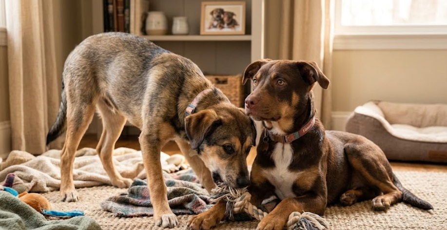
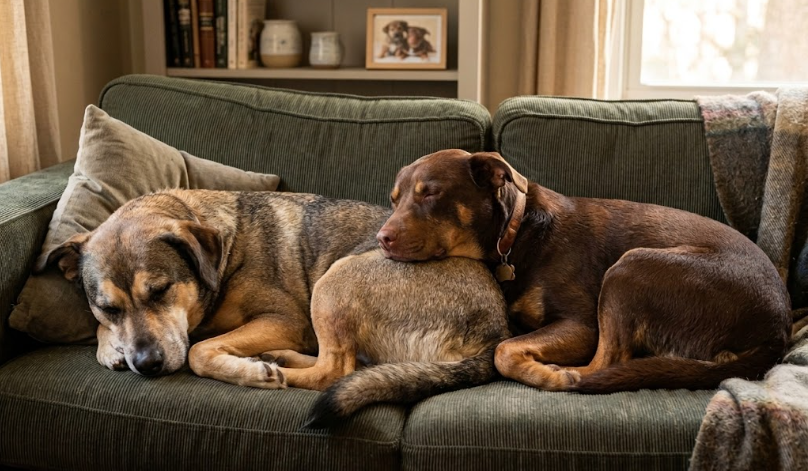

En el corazón de Villa Lugano, encontramos a Toro y Canela, dos cachorros que habían sido abandonados en un terreno baldío. Su historia es un testimonio del poder de la compasión y la dedicación de nuestra fundación para transformar vidas. Desde el momento en que los rescatamos, supimos que su camino hacia la recuperación sería largo y desafiante, pero también lleno de esperanza.

Cuando recibimos el llamado de emergencia desde Villa Lugano, no imaginábamos la gravedad de la situación. Toro y Canela fueron hallados en un estado de desnutrición severa y con heridas que requerían atención quirúrgica inmediata. Estaban asustados, pero desde el primer momento demostraron una conexión única: Toro protegía a Canela incluso cuando apenas tenía fuerzas para mantenerse en pie.

Pasaron 3 meses internados en nuestra clínica. Fueron semanas de cirugías complejas, curaciones diarias, antibióticos y, sobre todo, de enseñarles a confiar de nuevo en los humanos. Su recuperación fue un verdadero milagro impulsado por el trabajo incansable de nuestros veterinarios y el apoyo de nuestros donantes.

El mayor miedo que teníamos era tener que separarlos al momento de buscarles un hogar. Sin embargo, la historia tuvo el mejor final posible. La familia Rodríguez, de Palermo, se enamoró de ambos y decidió abrirles las puertas de su casa. Hoy, Toro y Canela disfrutan de paseos por los parques, duermen en camas abrigadas y, lo más importante, siguen juntos. Su caso nos recuerda por qué vale la pena cada esfuerzo.